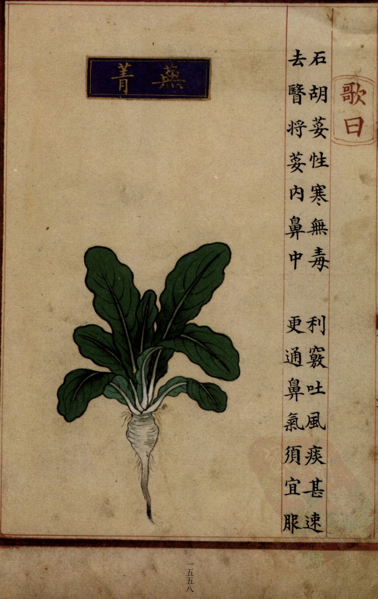
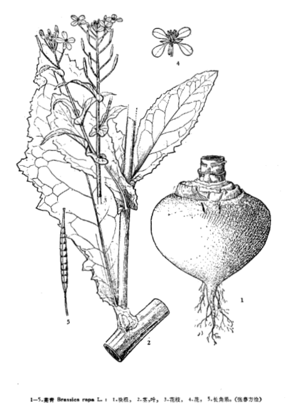

出现篇目
别名 蔓荆（《唐本》）、九英菘（《食疗》）、诸葛菜
古代记载 《毛诗故训传》
葑，须也。（《毛传》注《谷风》）
葑，蔓菁。（《毛传》注《桑中》）
葑，菜名也。（《毛传》注《采苓》）
《毛诗草木鸟兽虫鱼疏》
葑，蔓菁，幽州人或谓之芥。
《毛诗正义》
正义曰：《释草》云：“须，葑苁。”孙炎曰：“须，一名葑苁。”《坊记》注云：“葑，蔓菁也，陈、宋之间谓之葑。”陆机云：“葑，芜菁，幽州人或谓之芥。”《方言》云：“蘴荛，芜菁也，陈、楚谓之蘴，齐、鲁谓之荛，关西谓之芜菁，赵魏之郊谓之大芥。”蘴与葑字虽异，音实同，即葑也，须也，芜菁也，蔓菁也，葑苁也，荛也，芥也，七者一物也。（《毛诗正义》疏《谷风》）
《诗集传》
葑、蔓菁也。（《诗集传》集注《谷风》、《桑中》）
《本草纲目》
弘景曰∶《别录》芜菁、芦菔同条。芦菔是今温菘，其根可食，叶不中啖。芜菁根细于温菘而叶似菘，好食，西川惟种此。其子与温菘甚相似，而俗方无用，惟服食家炼饵之，而不言芦菔子，恐不用也。俗人蒸其根及作菹食，但小薰臭尔。 恭曰∶芜菁，北人名蔓荆，根、叶及子皆是菘类，与芦菔全别，体用亦殊。陶言芜菁似芦菔，芦菔叶不堪食，是江表不产二物，理丧其真也。菘子黑色，蔓荆子紫赤色，大小相似。芦菔子黄赤色，而大数倍，且不圆也。 大明曰∶蔓荆比芦菔梗短而细，叶大，连地上生，浓阔短肥，其色红。颂曰∶芜菁南北皆有，北土尤多。四时常有，春食苗，夏食心（亦谓之苔子），秋食茎，冬食根。河朔多种，以备饥岁。菜中之最有益者惟此尔。其子夏秋熟时采之。 宗奭曰∶蔓荆，夏月则枯。当此之时，蔬圃复种，谓之鸡毛菜。食心，正在春时。诸菜 之中，有益无损，于世有功。采撷之余，收子为油，燃灯甚明，西人食之。河东、太原所出，其根极大，他处不及也。又出西番吐谷浑地。 机曰∶叶是蔓荆，根是芦菔。 时珍曰∶《别录》以芜菁、芦菔同条，遂致诸说猜度。或以二物为一种，或谓二物全别，或谓在南为莱菔，在北为蔓荆，殊无定见。今按∶二物根、叶、花、子都别，非一类也。蔓荆是芥属，根长而白，其味辛苦而短，茎粗叶大而浓阔；夏初起苔，开黄花，四出如芥，结角亦如芥，其子均圆，似芥子而紫赤色。芦菔是菘属，根圆，亦有长者，有红、白二色；其味辛甘而永；叶不甚大而糙，亦有花叶者；夏初起苔，开淡紫花；结角如虫状，腹大尾尖；子似葫芦巴，不均不圆，黄赤色。如此分之，自明白矣。其蔓荆六月种者，根大而叶蠹；八月种者，叶美而根小；惟七月初种者，根叶俱良。拟卖者纯种九英，九英根大而味短，削净为菹甚佳。今燕京人以瓶腌藏，谓之闭瓮菜。
当代记载 《中国植物志》
芜青 （Brassica rapa）， 十字花科，芸薹属植物。二年生草本，高达100厘米；块根肉质，球形、扁圆形或长圆形，外皮白色、黄色或红色，根肉质白色或黄色，无辣味；茎直立，有分枝，下部稍有毛，上部无毛。基生叶大头羽裂或为复叶，长20-34厘米，顶裂片或小叶很大，边缘波状或浅裂，侧裂片或小叶约5对，向下渐变小，上面有少数散生刺毛，下面有白色尖锐刺毛；叶柄长10-16厘米，有小裂片；中部及上部茎生叶长圆披针形，长3-12厘米，无毛，带粉霜，基部宽心形，至少半抱茎，无柄。花期3-4月，果期5-6月。各地栽培。

<补遗雷公炮制便览>

<中国植物志>